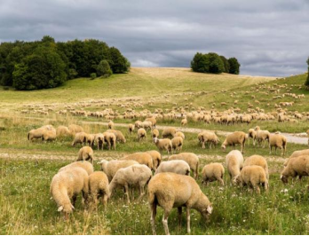
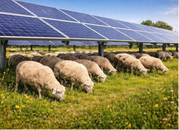

01
舍饲圈养
羊只主要在专门修建的圈舍内饲养，不进行草地放牧。羊只主要采食人工提供的粗饲料和精饲料，饲料通常由养殖人员按照饲养需要进行配比和投喂。羊只日常在圈舍内采食、饮水、行走和休息，活动范围主要受到圈舍空间的限制。
INFORMATION 01 · PRODUCTION SYSTEM
羊肉的养殖方式是指羊只在生长过程中所采用的饲养与管理模式，主要涉及饲养场地、饲喂方式、活动条件及相关生产设施等方面。不同养殖方式在生产场地、饲养管理和羊只活动条件等方面存在差异。
本页面浏览时长将被记录。您可以随时返回信息首页或继续问卷，无需等待。
根据羊只是否进行放牧，以及放牧活动是否在光伏发电场区内开展，可以将羊肉的养殖方式分为以下三种。
羊只主要在专门修建的圈舍内饲养，不进行草地放牧。羊只主要采食人工提供的粗饲料和精饲料，饲料通常由养殖人员按照饲养需要进行配比和投喂。羊只日常在圈舍内采食、饮水、行走和休息，活动范围主要受到圈舍空间的限制。

羊只在普通草地或牧场中进行放牧，放牧区域不设置与羊只放牧相结合的太阳能光伏发电设施。羊只主要通过采食牧草获取营养，并在适宜的牧场区域进行采食、行走和休息等日常活动，必要时可由养殖人员补充饲料。牧场环境会受到当地气候、草地植被及管理方式等因素影响。

在依法合规建设的光伏发电场区内，利用光伏板下方或板间具备放牧条件的区域开展羊只放牧。羊只可在适宜区域采食、行走和休息，光伏设施同时用于太阳能发电。与普通草地放牧相比，光伏板形成的遮阴区域可能改变牧场局部的光照和热环境。
| 比较维度 | 舍饲圈养 | 传统草地放牧 | 光伏场区放牧 |
|---|---|---|---|
| 主要场地 | 专门圈舍 | 普通草地或牧场 | 光伏发电场区 |
| 主要方式 | 人工饲喂 | 草地放牧 | 光伏场区放牧 |
| 光伏设施 | 无 | 无 | 有 |
注：以上内容介绍不同养殖方式的基本特征，不代表不同方式生产的羊肉必然具有某种品质差异。三种方式生产的羊肉均须按照适用规定接受检验检疫。
图片：本研究信息展示素材。